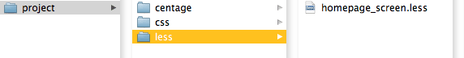

-
1
Pure fluidity
No pixel values, everything expands and shrinks according to browser width, remaining in visual balance. -
2
Pure xhtml
Centage! adds nothing to your xhtml markup. It's end result is pure, robust css. Bye bye "span-n last push-x"... -
3
Intelligence built-in
Centage! is based on less.js, and takes full advantage of it's advanced features like mixins, variables and nesting. -
4
Baseline grid 2.0
Baseline grid introduces visual rhytm into web page, but is a pain to maintain. Now it's easy with predefined variables.
- What and why?
- What is included?
- Installation
- Initialization
- Creating layout
- Helpers
- Variables
- Converting LESS to CSS
What and why?
Centage! is my five cents in defining a good fluid css framework. Every framework has its shortcomings – as has Centage! too – but it also solves some major issues in existing ones.
Reason for Centage! is purely practical. I started to redesign my own site and wanted to go for a fluid grid, mostly just for the challenge of it. At the same time I had made some tests with Less and although it seemed pretty cool, it was still tricky to develop with command line compiler. When less.js came along, the pieces existed for putting together a next gen fluid framework.
None of the existing fluid frameworks worked as I wanted them to. Fluid 960Grid is an impressive achievement, but what if I want to start my grid from page edge? Or what about nested grids and their gutters? Another wonderful undertaking is Elastic, but it's dependancy on javascript troubles me.
I have my roots in print design and designing complex grid systems for newspapers. So I wanted the same kind of grid into web as well. Especially nested, percentage width grids are a challenge that simply cannot be addressed with traditional css (because they inherit relative width from parent element).
My requirements for a grid system are:
- It should work acceptably without javascript.
- It should mimic print grids as accurately as possible.
- Proportions of columns and gutters should be visually equal at any width.
- It should add minimum extra markup.
- No representational markup.
- Should work on most browsers after IE6. IE6 users can expect trouble anyway.
- It should be light + simple./li>
How to get there:
- Only use javascript and CSS3 to beautify layout, rely on robust css.
- Margins to columns are right. You should be able to decide not to use gutters.
- Take full advantage of LESS calculation capabilities to deal with subgrids.
- Only extra markup required are occasional ".last" -classes.
- Put all presentational markup into CSS/Less.
- Use LESS to enable more flexible, powerful and compact CSS.
- Only core stylesheet is necessary, extending by modularity.
Known issues / limitations:
- Centage! is currently in alpha release state and might have bugs. It's not fully tested with IE, so you might encounter problems
- Overriding right margin of rightmost columns requires .last -style. Any ideas how to beat this limitation are welcome (tried with negative margin container, but that messed up the percentage calculations and using last-child doesn't recognize last item on multirow grids). Note that if you can identify the rightmost element in a row with a class or id, you can drop the last-style into less-file.
- Subpixel rendering of different browsers cause small irregularities in grid. Although a javascript-fix has been considered, irregularities are not visually very significant in real life layouts. Only browser that renders pixel-perfect is Firefox.
- Opera is poorly supported because its horrible rendering. No decimal width percentages? Come on Opera, that's lame!
What is included?
- centage_screen.less
- The core of system, styles meant for screen and projectors
- init.less
- Here you tell what kind of grid you'd like to have.
- typography.less Optional
- To keep things simple Centage! core is very simplified. And you probably want to set up your own typography. But it's easier to start with some basic styles. This is not just a normal typography css file though – it automatically adjust to font size and line height specified in init.less and keeps everything in baseline grid.
- extras.less Optional
- Here are some helper styles that are probably very common to every less-framework, like shadow, rounded corners and such.
- js/centage.js Optional
- At this stage this is used to nothing but creating and controlling the overlay grid for development and testing.
- img Optional
- Images in image folder are for overlay grid.
Installation
1. Download Centage! and copy to your working folder.
2. Create folders 'less' and 'css' into your project folder. (this is recommended if you are using LESS.app to convert LESS to CSS)
3. Create a new document in your preferred text editor with the extension ".less". This will be your stylesheet. For convinience set syntax/language to CSS. Save into folder 'less'
4. Add newly created file to your document head as "stylesheet/less".
<link rel="stylesheet/less" media="screen" href="homepage_screen.less" />
5. In your new less document's first line, import Centage! styles by importing init.less.
/*Adjust the file path according to your setup */
@import '../centage/init.less';
6. Add less to your document head and call it. Remove the latter script tag and its contents when you are done developing.
<script src="http://lesscss.googlecode.com/files/less-1.0.35.min.js"></script>
<script type="text/javascript" charset="utf-8">
less.env = "development";
less.watch();
</script>
7. If you want to see the underlying grid while developing, add this to head as well.
<script src="http://ajax.googleapis.com/ajax/libs/jquery/1.4.2/jquery.min.js"></script>
<script type="text/javascript" src="../centage/js/centage.js"></script>
<script type="text/javascript" charset="utf-8">
$(document).ready(function(){
grid(12); /* Your grid column number here, please */
});
</script>
8. Put your page structure inside a div with id 'wrap' (if you prefer other naming, feel free to modify centage_screen.less).
<body>
<div id="wrap">Content here</div>
</body>
That's it, now let's move on to fun part.
Initialization
As mentioned, Centage is based on less.js, a rewrite of less. Before diving into Centage! you should familiarize yourself with less language. It's well-thought and very simple really. It'll take you only 10 minutes.
1. Open init.less and modify settings. Set number of columns on page, default font size and line height. Let's look at it step-by-step:
2. Define main grid's column count. You can use other grid divisions inside a page as well, but this sets the foundation for your styles.
/*page grid columns*/
@grid:12;
3. Define default gutter width in percentages. Centage is a fluid grid, so all horizontal values are relative. Note that Centage is clever enough to remain this gutter width even in nested grids. Now isn't that something.
/*space (gutter) between columns.*/
@gut:1.5%;
4. Set the page size. This sets the width of div#wrap. Width is set in ems as default to compensate text size changes, but feel free to use your preferred fluid units.
/*page size*/
@max-width:110em;
@min-width:66em;
5. Set font family, font size and line height. The default line height also defines the baseline grid increment. Don't worry about percentages or ems, they're automatically calculated for you.
/*typography, baseline grid*/
@font:Arial, sans-serif;
@fontpx:12; /* standard font size in pixels, but without 'px' */
@linepx:18; /* line height in pixels but without "px". */
Creating a layout
Setting up columns
The columns are easy to set up using two "functions" in less: .col() and .sub-col()
- .col( column-count, padding-top*, padding-right*, padding-bottom*, padding-left* );
- Create a column x grid divisions wide. Give it optional padding.
- .sub-col( parent-column-count, column-count, padding-top*, padding-right*, padding-bottom*, padding-left* );
- Create a column inside another column. Specify the width of parent. Give optional padding.
Example HTML
<div id="wrap"> /*wrap width is defined in init.less*/
<div id="content">
<div class="section"></div>
<div class="section" id="news"></div>
</div>
<div id="sidebar"></div>
</div>
Example LESS
/* Content is set 8 columns wide */
#content {
.col(8);}
/* Nested column, 4 columns inside 8 column container. Paddings can include calculations. */
.section {
.sub-col(8,4,@line, 2*@gut, @line, 2*@gut);}
/* The News element is the last one in its row. Optionally it is defined to align to right in order to render nicely despite of sub-pixel rendering problems in many browsers. */
#news {
.last(right);}
/* = 3 columns wide, one line vertical padding, horizontal padding as wide as gutter. Pushed right one column. */
#sidebar {
.col(3, @line, @gut, @line, @gut);
.margin-left(1);
.last(right);}
Helpers
- .last(@align:left)
- Set to the last element on the row
- .margin-left(@margin_cols:1);
- Easily push column to the right using full column widths
- .margin-right(@margin_cols:1);
- Easily push column to the left using full column widths
- .margin-top(@lines:1, @borders_to_compensate:0);
- Easily push column down using full baseline grid lines. Option to compensate for borders used (pixels)
- .margin-bottom(@lines:1, @borders_to_compensate:0);
- Easily give column space below it by using full baseline grid lines. Option to compensate for borders in order to keep things in baseline grid (pixels).
- .padding-top(@lines:1, @borders_to_compensate:0);
- Easily give column top padding by using full baseline grid lines. Option to compensate for borders in order to keep things in baseline grid (pixels).
- .padding-bottom(@lines:1, @borders_to_compensate:0);
- Easily give column bottom padding by using full baseline grid lines. Option to compensate for borders in order to keep things in baseline grid (pixels).
Variables
Use these in your own LESS definitions to maintain uniform appearance in your site. For example @gut is a great way to always maintain the same horizontal spacing in element paddings etc.
- @gut
- Space between columns (percentage)
- @line
- Baseline increment (em)
- @font
- Default font family (string)
- @bodyfont
- Default font size (percentage)
- @max-width
- Page container maximum width (percentage or em)
- @min-width
- Page container minimum width (percentage or em)
- @col1_gut
- 1 column width (percentage)
- @col1_plus_gut
- 1 column width + gutter (percentage)
- @col1
- One column if no gutters are defined (percentage)
- @leading
- Space between lines of text in baseline (em)
Basic spacing (init.less)
Global settings (init.less)
Calculated
Converting LESS to CSS
Less.js is great for development, but in production environment you probably don't want to depend on javascript. Luckily it's easy to convert LESS into compact, minified CSS. (All different .less files are bundled into one css to optimize performance)
Options:
1. Highly recommended: If you are on OSX, get a copy of nice LESS.app by Bryan D K Jones which provides a simple interface for conversion.
2. If you dig command line instead, or you are into unix, you can use LESS-conversion as described here.
3. If you are on Windows PC, I really cannot help you. If someone could throw in easy steps, I'd be happy to include them here.